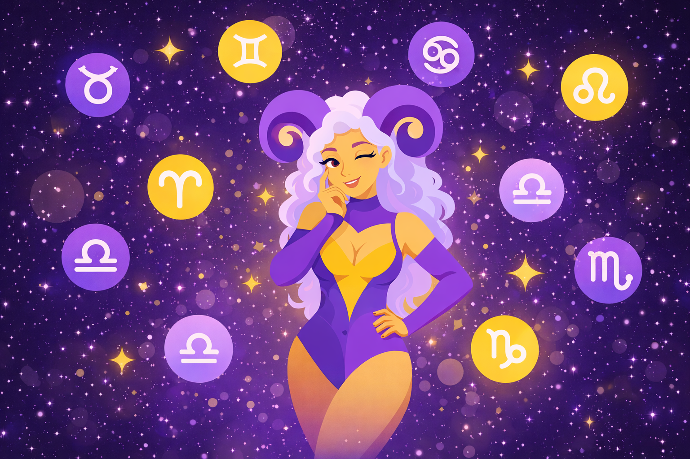

Hi! 💕 Would you like to know how your inner astrological map can answer the questions that lay dormant within? ▣ Chat with me today! ⌕
20 april
Hello! Your card of the day is "III The Empress". Quick meaning: "Represents the Earth Mother". Want more detailed reading? I'm online and waiting for you in the chat!
•••

0:20•••
0:02•••
Hi! 💕 Would you like to know how your inner astrological map can answer the questions that lay dormant within? ▣ Chat with me today!
•••
Greetings! If you really want to do something, you’ll find a way. If you don’t, you’ll find an excuse. Let’s talk about it! Courage is the most important of all the virtues because without courage, you can’t practice any other virtue consistently. Would you like a reading ? :)
•••
22 april
Hi! 💕 Would you like to know how your inner astrological map can answer the questions that lay dormant within? ▣ Chat with me today!